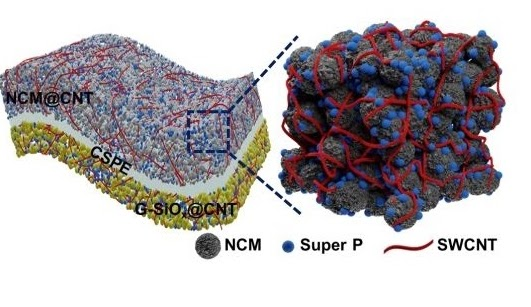
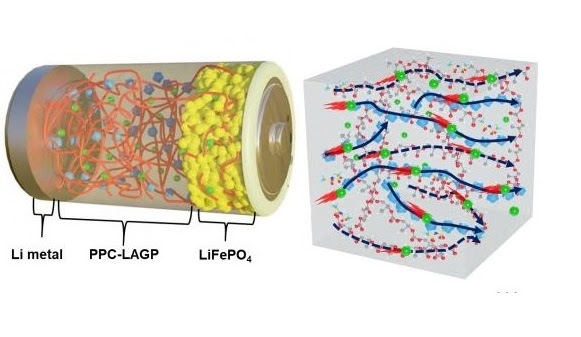
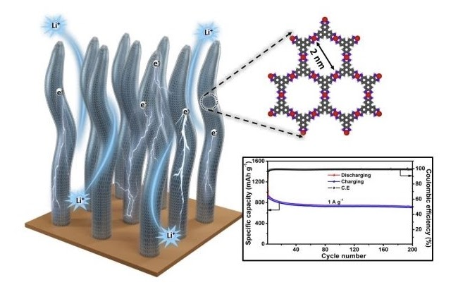

|
6. Boosting sodium-ion battery performance using an antimony nanoparticle self-embedded in a 3D nitrogen-doped carbon framework anode
An-Giang Nguyen,
Hang T.T.Le, Rakesh Verma, Duc-Luong Vu, Chan-Jin Park*
Chemical Engineering Journal, 132359, 2022.
DOI: 10.1016/j.cej.2021.132359 /
IF2021 = 13.273
|
|

|
5. Reinforcing effect of single-wall carbon nanotubes on the LiNi0.6Co0.2Mn0.2O2 composite cathode for high-energy-density all-solid-state Li-ion batteries
Min-Hong Woo, Pravin N. Didwal, Hee-Joong Kim, Jin-Sub Lim, An-Giang Nguyen, Chang-Soo Jin, Duck Rye Chang,* Chan-Jin Park*
Applied Surface Science, 150934, 2021.
DOI: 10.1016/j.apsusc.2021.150934 /
IF2021 = 6.707
|
|

|
4. Composite solid electrolyte comprising poly(propylene carbonate) and Li1.5Al0.5Ge1.5(PO4)3 for long-life all-solid-state Li-ion batteries
Bong-Jun Sung, Pravin N. Didwal, Rakesh Verma, An-Giang Nguyen, Duck Rye Chang, Chan-Jin Park*
Electrochimica Acta, 139007, 2021.
DOI: 10.1016/j.electacta.2021.139007 /
IF2021 = 6.091
|
|

|
3. Graphene analogue metal organic framework with superior capacity and rate capability as an anode for lithium ion batteries
Aqsa Nazir, Hang T. T. Le, An-Giang Nguyen, Chan-Jin Park*
Electrochimica Acta, 138750, 2021.
DOI: 10.1016/j.electacta.2021.138750 /
IF2021 = 6.091
|
|
|
2. SnSe nanocomposite chemically-bonded with carbon-coating as an anode material for K-ion batteries with outstanding capacity and cyclability
Rakesh Verma, Pravin N. Didwal, An-Giang Nguyen, Chan-Jin Park*
Chemical Engineering Journal, 129988, 2021.
DOI: 10.1016/j.cej.2021.129988 /
IF2021 = 13.273
|

|
1. Biowaste Orange Peel‐Derived Mesoporous Carbon as a Cost‐Effective Anode Material with Ultra‐Stable Cyclability for Potassium‐Ion Batteries
Rakesh Verma, Yashabanta N. Singhbabu, Pravin N. Didwal, An-Giang Nguyen, Jaekook Kim, Chan‐Jin Park*
Batteries & Supercaps , 3 (10), 1099-1111, 2020.
DOI: 10.1002/batt.202000068 /
IF2021 = 7.093
|
|